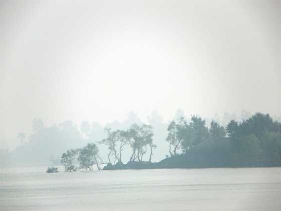
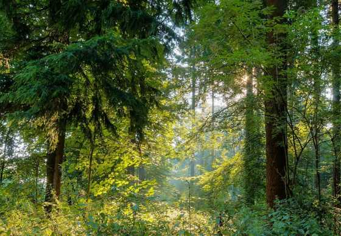
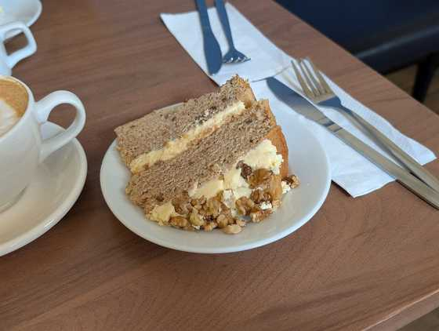

香川県三豊市・父母ヶ浜バス停となり
あんとコーヒー鹿鳴堂
浜辺の景色にとけこむ小さな店で、自家製のあんと、水出しコーヒーを一杯。
お店のこと
景色にとけこむ、トレーラーハウスの店。
「あんとコーヒー 鹿鳴堂」は、2026年6月20日にオープンした、父母ヶ浜のバス停のとなりにあるお店です。紹介記事によると、父母ヶ浜の風景に溶け込むトレーラーハウス型の店舗で、天然水の水出しコーヒーと自家製のあんが看板メニューとされています。
コーヒーは「香り高く、すっきりした味わい」と紹介されています。あんの甘さとコーヒーのすっきり感を合わせた一杯が、このお店の軸のようです。
情報源: 新店.com(四国新聞の紹介記事) / Instagram @rokumeido
屋号「鹿鳴堂」の意味やオーナーの想いは、確認できた資料がありません。このページの見出しや文のうち上記の事実以外は、制作側のイメージです。



メニュー
あんと、コーヒー。
紹介記事に載っていた品です。価格・詳細は変わることがあるため「準備中」とし、最新情報はInstagramをご確認ください。

天然水の水出しコーヒー
香りがよく、すっきりした味わいと紹介されています。
価格 準備中

飲むパフェ
水出しコーヒーとあんを合わせた人気の一品と紹介されています。
価格 準備中

あんバターバゲット
好評の一品と紹介されています。
詳細 準備中

ホットサンド・おはぎ
新商品として紹介されています。
詳細 準備中
写真はフリー素材のイメージで、店舗の実際の様子や提供品ではありません。


口コミ
こんな声が聞こえてきそうです。
浜辺を歩いたあとに、冷たい水出しコーヒーとあんの組み合わせがうれしかったです。
小さなトレーラーハウスの店がかわいくて、景色を眺めながらゆっくり過ごせました。
あんの素朴な甘さがコーヒーによく合って、また飲みたくなる味でした。
上の3件は制作側が作成したイメージ例で、実在のお客様の声ではありません。
アクセス
父母ヶ浜バス停のとなり。
| 所在地 | 〒769-1404 香川県三豊市仁尾町仁尾乙266-3 となり 父母ヶ浜バス停 |
|---|---|
| 電話 | 準備中 |
| 営業時間 | 準備中 |
| 定休日 | 準備中 |
| SNS | Instagram @rokumeido |
記事と他サイトで番地表記が異なる場合があります。お出かけ前にInstagramで最新情報をご確認ください。
写真クレジット
このページの写真は、フリー素材(クリエイティブ・コモンズ等)のイメージです。店舗の実際の様子ではありません。
- beans.jpg「Roasted coffee beans (14562943389)」 Andreas Poike / CC BY 2.0
- cupbeans.jpg「Coffee cup on coffee beans」 Toni Cuenca / CC0 1.0
- walnut.jpg「A slice of coffee and walnut cake - Audit Room Café, Petworth House」 Andy Li / CC0 1.0
- choco.jpg「Baileys Chocolate Cake - Cafe Coho 2026-01-08」 Andy Li / CC0 1.0
- foggy.jpg「Foggy autumn forest in the morning」 Sergey Pesterev / CC BY-SA 4.0
- mistpath.jpg「Path Mist Daribokgre Nokrek West Garo Oct24 A7CR 03594」 Timothy A. Gonsalves / CC BY-SA 4.0
- trail.jpg「Forest trail, Oberlibbach」 Gerda Arendt / CC0 1.0
- sunwood.jpg「Dülmen, Göversheide -- 2015 -- 7723-7」 Dietmar Rabich / CC BY-SA 4.0
- lake.jpg「Mist on Lake Whatcom, 2019」 U.S. Department of Agriculture / CC0 1.0
- bay.jpg「Misty bay (23358433189)」 juggadery / CC BY-SA 2.0
- planks.jpg「Weatherworn planks on top of wooden table」 W.carter / CC0 1.0
- book.jpg「Old book and coffee on a wooden table in the kitchen」 Shixart1985 / CC BY 2.0
- ridge.jpg「Misty Mountains in Norway (Unsplash)」 Torbjorn Sandbakk / CC0 1.0